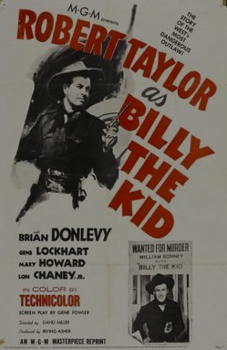
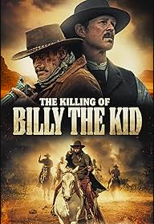

Post 3


.png)
Theories and myths of Billy the Kid
Myths
Billy the Kid had been shot and killed on July 14 by Pat Garrett. He had claimed to have ended the lives of 21 men; however, most experts state he has only been linked to the deaths of nine men. He is known to have killed Windy Cahill and two deputies after escaping jail, with the rest being in the Lincoln County War. The myth that he killed 21 people has been sensationalized by the press and is a story that is passed down due to the obscurity of the claim. Billy the Kid claimed to have killed 21 men, one for each year of his life. Those claims have been debunked, and he is linked to nine murders in total.
Theories
After Billy the Kid's death in 1881, some speculate he was still alive, stating Garrett had shot the wrong person on that fateful night. Two years after his death, at least two men emerged decades later claiming to be Billy. According to History.com, one man was John Miller. He was a farmer and horse trainer who lived on the New Mexico-Arizona border and passed in 1937. One reason people believe he may have been Billy is due to the pistol with 21 distinctive notches on the grip. The second man was Ollie “Brushy Bill” Roberts. He managed to get a meeting with the governor of New Mexico in 1950, where he tried and failed to get a pardon for Billy's murders, and he passed shortly after. Details on Billy the Kid are hard to come by; the most credible account of his story and life seems to come from his killer, Garrett. Garrett, in his book “The Authentic Life of Billy the Kid, Noted Desperado of the Southwest, Whose Deeds of Daring and Blood Made His Name a Terror in New Mexico, Arizona and Northeastern Mexico,” described how the killing of Billy the Kid happened. He also goes into detail about what happened after his death. According to History.com, “The next day, according to Garrett, a Coroner's Jury held an inquest, determined that the dead man was Billy the Kid, and ruled that Garrett's killing of him had been a justifiable homicide,” proving the theories and myths that Billy the Kid survived the shooting false. The state tried to exhume the body and test it against his mother's DNA, according to History.com; however, they couldn't find the burial plot due to a flood that washed away the markers in 1904. They had asked three of the pallbearers where his body was laid to rest; however, all three gave separate answers as to where he was buried, making it almost impossible to correctly unbury him without disrupting the graves of those around him.
Sensationalized
After Billy the Kid died, he's had 52 movies made about him and has starred in about four TV shows. These shows and movies don't include the various documentaries about him. Some noticeable actors that have starred in shows about him are Jack Beutel in “The Outlaw” and Paul Newman in “The Left-Handed Gun.” The first movie made about his life was “The Adventure of Billy the Kid” in 1911, and the most recent movie was “The Killing of Billy the Kid” in 2023. The media has sensationalized his life and crimes, making him a larger-than-life figure.